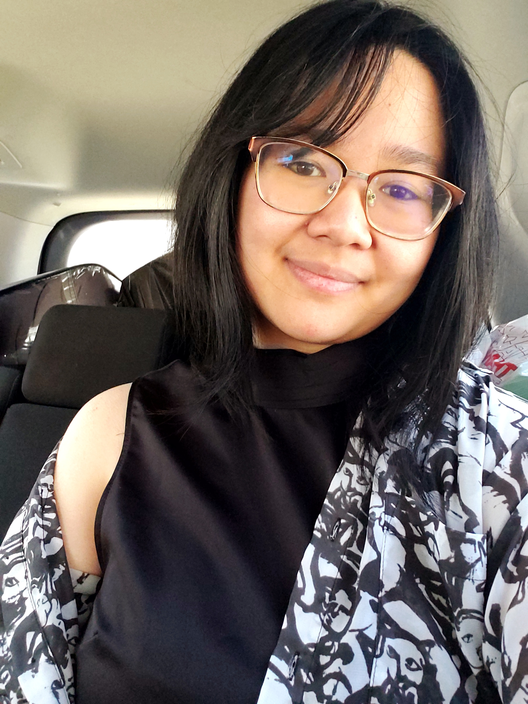

|  | Hello there!My name is Catherine (or Cath for short) and as you can tell, I'm a beginner when it comes to web development. Keep scrolling or click on the navigation bar at the top to learn more about me! |
I'm a biomedical engineering student at the University of Waterloo and I'm incredibly passionate about both the mental health and gaming industry. As a career, I would love to work in either of these industries, helping to either improve mental health care accessibility or improve gameplay for players. My skillset is more mechanically and electrically inclined, but I also enjoy completing UI/UX projects and am open to software projects as seen by this website.
My experiences have allowed me to try many disciplines such as IT servicing, IoT development, mechanical design, electrical/hardware design, basic firmware development, simple Python programming, machine learning techniques (data science) , and my specialty which is program/project management.
In the future, I would love to pursue more UI/UX design or hardware development, and am looking for opportunities that will help me to hone these skillsets.
Other than that, I am an advocate for mental health, occasionally working as part of the University of Waterloo's MATES program that helps to support students who have troubles and wish to speak about them with someone anonymously. I also particularly enjoy video games such as Valorant, Genshin Impact, Baldur's Gate 3, and Dungeons & Dragons with other games played casually such as Cities Skylines and Civilization V.
Throughout my semesters at the University of Waterloo, I've done several different projects that have allowed me to hone my skills and practice engineering given the knowledge I had at the time. Here are some of the projects I've worked on!
From scratch, I coded this website using HTML/CSS code from GitHub's free GitHub pages. I first wireframed the layout on Figma which can be seen just to the side over here. Completing this project allowed me to practice my wireframing skills, making aesthetic and important UI/UX decisions, as well as improve my software development skills. As long as the website doesn't look like the Figma prototype, you can consider this website incomplete.
A course project I completed in my 2B term (Summer 2020), which is focused on creating assistive technology for the elderly who suffer from dementia. My primary role was to be a a UI/UX designer while my secondary role was to assist in the research.
One of my duties was to complete the mobile interface for a secondary user who would use the application to monitor the primary user's progress on the application. Doing research, I developed user stories from articles and anecdotes of caretakers. This helped me to create an intuitive interface for secondary users.
For fun, I did some random toying with some programs in order to build some skills. This includes exploring unity Learn to learn how to use the tool, as well as following SolidWorks tutorials for advanced surfacing techniques, some of which can be seen in the images.
As another side project that I never completed, I attempted to make an excel spreadsheet that would automatically track how much profit/loss I made off of the stock market given certain buy/sell specifications.
Throughout my time at the University of Waterloo, I've developed plenty of soft skills, and technical skills. Some of my most notable ones are my project management, prototyping, and my adaptability .
Software & Other Technical
|
Interpersonal / Soft
|